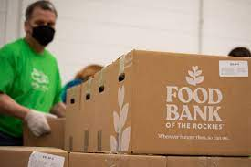

|  In the heart of a bustling city, amidst the daily hustle and bustle, there lies a beacon of hope for many: the local food bank. This is where I find myself every Thursday and Saturday, dedicating my time and energy to a cause close to my heart. The food bank is more than just a place for distributing meals; it's a community hub where compassion and support flow as freely as the coffee in the volunteers' break room. My journey with the food bank began a year ago, driven by a desire to make a tangible difference in my community. From the moment I stepped through the doors, I was greeted with warmth and a sense of belonging. The work is hard and often physically demanding, involving sorting through donations, packing food parcels, and sometimes delivering them to those who are unable to make the trip themselves. Yet, I find profound satisfaction in every box of food sorted and every grateful smile from those I help. The food bank serves a wide array of individuals and families, each with their own story. Elderly folks who reminisce about the past, young families trying to make ends meet, and individuals who have fallen on hard times. I listen to their stories, offering a sympathetic ear and sometimes, a shoulder to cry on. The connection formed with the community members goes beyond mere assistance; it's a lifeline in their times of need. One particularly cold December day, the food bank organized a holiday meal for the community. I was at the forefront of this initiative, helping to cook and serve the meals. The joy and warmth in the room were palpable, as people from different walks of life came together to share a meal and celebrate the spirit of the season. For me, this was a poignant reminder of why I started volunteering at the food bank in the first place: to bring light into the lives of others. |